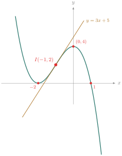
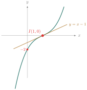
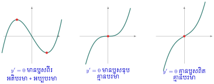
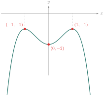
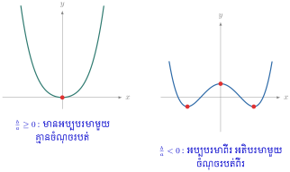
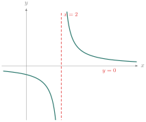
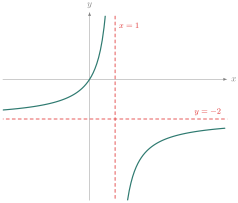
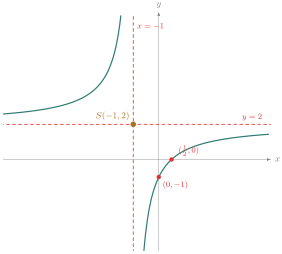
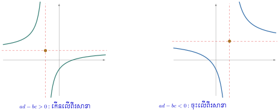

- សិក្សាអថេរភាពនិងសង់ក្រាបនៃអនុគមន៍ពហុធាដឺក្រេទី 3
- សិក្សាអថេរភាពនិងសង់ក្រាបនៃអនុគមន៍ប៊ីការេ
- រកអាស៊ីមតូតឈរនិងអាស៊ីមតូតដេកនៃក្រាបតាងអនុគមន៍សនិទាន
- សិក្សាអថេរភាពនិងសង់ក្រាបនៃអនុគមន៍សនិទានងាយៗ ។
ជំហានសិក្សាអនុគមន៍ ៖ (1) ដែនកំណត់ ; (2) ដេរីវេ \(\displaystyle f'\) សញ្ញា និងបរមា ; (3) លីមីតនៅចុងដែន ; (4) តារាងអថេរភាព ; (5) \(\displaystyle f''\) និងចំណុចរបត់ ; (6) ចំណុចកាត់អ័ក្ស ផ្ចិតឆ្លុះឬអ័ក្សឆ្លុះ ; (7) សង់ក្រាប ។
1. អនុគមន៍ពហុធាដឺក្រេទី 3
1.1. ឧទាហរណ៍
ឧទាហរណ៍ 1 : សិក្សាអថេរភាពនិងសង់ក្រាបនៃ \(\displaystyle f(x) = -x^3 - 3x^2 + 4\) ។
ដែនកំណត់ \(\displaystyle D = \mathbb{R}\) ។ \(\displaystyle f'(x) = -3x^2 - 6x = -3x(x + 2) = 0\) ឱ្យ \(\displaystyle x = -2\) ឬ \(\displaystyle x = 0\) ។ លីមី \(\displaystyle \displaystyle\lim_{x\to-\infty}f = +\infty\) និង \(\displaystyle \displaystyle\lim_{x\to+\infty}f = -\infty\) ។
| \(\displaystyle x\) | \(\displaystyle -\infty\) | \(\displaystyle -2\) | \(\displaystyle 0\) | \(\displaystyle +\infty\) | |||
| \(\displaystyle f'(x)\) | \(\displaystyle -\) | \(\displaystyle 0\) | \(\displaystyle +\) | \(\displaystyle 0\) | \(\displaystyle -\) | ||
| \(\displaystyle f(x)\) | \(\displaystyle +\infty\) | \(\displaystyle \searrow\) | \(\displaystyle 0\) | \(\displaystyle \nearrow\) | \(\displaystyle 4\) | \(\displaystyle \searrow\) | \(\displaystyle -\infty\) |
អប្បបរមាធៀប \(\displaystyle f(-2) = 0\) ; អតិបរមាធៀប \(\displaystyle f(0) = 4\) ។ \(\displaystyle f''(x) = -6x - 6 = 0\) ឱ្យ \(\displaystyle x = -1\) : \(\displaystyle f''\) ប្តូរពី \(\displaystyle +\) ទៅ \(\displaystyle -\) ហើយ \(\displaystyle f(-1) = 2\) ។ ចំណុចរបត់ \(\displaystyle I(-1, 2)\) ; ក្រាបផតមុនប៉ោងក្រោយ ។
កាត់អ័ក្ស \(\displaystyle y\) : \(\displaystyle f(0) = 4\) ។ កាត់អ័ក្ស \(\displaystyle x\) : \(\displaystyle -x^3 - 3x^2 + 4 = -(x - 1)(x + 2)^2 = 0\) ឱ្យ \(\displaystyle x = 1\) និង \(\displaystyle x = -2\) (ប៉ះ) ។ បន្ទាត់ប៉ះត្រង់ \(\displaystyle I\) : \(\displaystyle f'(-1) = 3\) ហើយ \(\displaystyle y = 3(x + 1) + 2 = 3x + 5\) ។

ផ្ចិតឆ្លុះ : ដូរតម្រុយ \(\displaystyle x = X - 1\), \(\displaystyle y = Y + 2\) ។ \(\displaystyle Y + 2 = -(X-1)^3 - 3(X-1)^2 + 4\) ឱ្យ \(\displaystyle Y = -X^3 + 3X\) ជាអនុគមន៍សេស ព្រោះ \(\displaystyle F(-X) = -F(X)\) ។ ដូច្នេះ \(\displaystyle I(-1, 2)\) ជាផ្ចិតឆ្លុះនៃក្រាប ។
ឧទាហរណ៍ 2 : សិក្សាអថេរភាពនិងសង់ក្រាបនៃ \(\displaystyle y = x^3 - 3x^2 + 4x - 2\) ។
\(\displaystyle D = \mathbb{R}\) ; \(\displaystyle y' = 3x^2 - 6x + 4\) មាន \(\displaystyle \Delta' = -3 < 0\) ដូច្នេះ \(\displaystyle y' > 0\) គ្រប់ \(\displaystyle x\) : \(\displaystyle y\) កើនជានិច្ច ហើយគ្មានបរមា ។ \(\displaystyle \displaystyle\lim_{x\to\mp\infty}y = \mp\infty\) ។
| \(\displaystyle x\) | \(\displaystyle -\infty\) | \(\displaystyle +\infty\) | |
| \(\displaystyle y'\) | \(\displaystyle +\) | ||
| \(\displaystyle y\) | \(\displaystyle -\infty\) | \(\displaystyle \nearrow\) | \(\displaystyle +\infty\) |
\(\displaystyle y'' = 6x - 6 = 0\) ឱ្យ \(\displaystyle x = 1\) ហើយ \(\displaystyle y(1) = 0\) : ចំណុចរបត់ \(\displaystyle I(1, 0)\) ; \(\displaystyle y'' < 0\) មុន (\(\displaystyle y\) ប៉ោង) \(\displaystyle y'' > 0\) ក្រោយ (\(\displaystyle y\) ផត) ។ កាត់អ័ក្ស \(\displaystyle y\) : \(\displaystyle y(0) = -2\) ។ \(\displaystyle y = (x - 1)(x^2 - 2x + 2)\) ហើយ \(\displaystyle x^2 - 2x + 2\) គ្មានឫសពិត ដូច្នេះកាត់អ័ក្ស \(\displaystyle x\) តែត្រង់ \(\displaystyle x = 1\) ។ បន្ទាត់ប៉ះត្រង់ \(\displaystyle I\) : \(\displaystyle y'(1) = 1\) ឱ្យ \(\displaystyle y = x - 1\) ។ ដូរតម្រុយ \(\displaystyle x = X + 1\), \(\displaystyle y = Y\) : \(\displaystyle Y = X^3 + X\) ជាអនុគមន៍សេស ដូច្នេះ \(\displaystyle I\) ជាផ្ចិតឆ្លុះ ។

1.2. ករណីទូទៅ \(\displaystyle y = ax^3 + bx^2 + cx + d\)
\(\displaystyle y' = 3ax^2 + 2bx + c\) ។ បើ \(\displaystyle y' = 0\) មានឫសពីរផ្សេងគ្នា នោះមានអតិបរមាធៀបមួយនិងអប្បបរមាធៀបមួយ ; បើមានឫសឌុបឬគ្មានឫសពិត នោះគ្មានបរមាទេ ។ លីមី \(\displaystyle \displaystyle\lim_{x\to+\infty}y = +\infty\) បើ \(\displaystyle a > 0\) ហើយ \(\displaystyle -\infty\) បើ \(\displaystyle a < 0\) (និង \(\displaystyle x \to -\infty\) ផ្ទុយគ្នា) ។
\(\displaystyle y'' = 6ax + 2b = 0\) ឱ្យ \(\displaystyle x = -\dfrac{b}{3a}\) : ក្រាបមានចំណុចរបត់តែមួយ ហើយជាផ្ចិតឆ្លុះនៃក្រាប ។

សិក្សាអថេរភាពនិងសង់ក្រាបនៃ ក. \(\displaystyle y = -x^3 + 3x^2 - 4\) ខ. \(\displaystyle y = 2x^3 - 3x^2 + 1\) ។
មើលចម្លើយ
ក. អប្បបរមា \(\displaystyle f(0) = -4\) ; អតិបរមា \(\displaystyle f(2) = 0\) ; \(\displaystyle I(1, -2)\) ; កាត់អ័ក្ស \(\displaystyle x\) ត្រង់ \(\displaystyle -1\) និង \(\displaystyle 2\) (ប៉ះ) ។ ខ. អតិបរមា \(\displaystyle f(0) = 1\) ; អប្បបរមា \(\displaystyle f(1) = 0\) ; \(\displaystyle I\left(\frac12, \frac12\right)\) ; កាត់អ័ក្ស \(\displaystyle x\) ត្រង់ \(\displaystyle -\frac12\) និង \(\displaystyle 1\) (ប៉ះ) ។
2. អនុគមន៍ប៊ីការេ \(\displaystyle y = ax^4 + bx^2 + c\)
2.1. ឧទាហរណ៍
ឧទាហរណ៍ : សិក្សាអថេរភាពនិងសង់ក្រាបនៃ \(\displaystyle y = -x^4 + 2x^2 - 2\) ។
\(\displaystyle D = \mathbb{R}\) ; \(\displaystyle y' = -4x^3 + 4x = -4x(x - 1)(x + 1) = 0\) ឱ្យ \(\displaystyle x = -1, 0, 1\) ។ \(\displaystyle \displaystyle\lim_{x\to\pm\infty}y = -\infty\) ។
| \(\displaystyle x\) | \(\displaystyle -\infty\) | \(\displaystyle -1\) | \(\displaystyle 0\) | \(\displaystyle 1\) | \(\displaystyle +\infty\) | ||||
| \(\displaystyle y'\) | \(\displaystyle +\) | \(\displaystyle 0\) | \(\displaystyle -\) | \(\displaystyle 0\) | \(\displaystyle +\) | \(\displaystyle 0\) | \(\displaystyle -\) | ||
| \(\displaystyle y\) | \(\displaystyle -\infty\) | \(\displaystyle \nearrow\) | \(\displaystyle -1\) | \(\displaystyle \searrow\) | \(\displaystyle -2\) | \(\displaystyle \nearrow\) | \(\displaystyle -1\) | \(\displaystyle \searrow\) | \(\displaystyle -\infty\) |
អតិបរមាធៀប \(\displaystyle y(\pm1) = -1\) ; អប្បបរមាធៀប \(\displaystyle y(0) = -2\) ។ \(\displaystyle y'' = -12x^2 + 4 = 0\) ឱ្យ \(\displaystyle x = \pm\frac{\sqrt3}3\) ហើយ \(\displaystyle y = -\frac{13}9\) : ចំណុចរបត់ពីរ \(\displaystyle \left(\pm\frac{\sqrt3}3, -\frac{13}9\right)\) (ប៉ោង ផត ប៉ោង) ។
កាត់អ័ក្ស \(\displaystyle y\) : \(\displaystyle y(0) = -2\) ។ កាត់អ័ក្ស \(\displaystyle x\) : តាង \(\displaystyle t = x^2\) : \(\displaystyle -t^2 + 2t - 2 = 0\) មាន \(\displaystyle \Delta' = -1 < 0\) ដូច្នេះមិនកាត់អ័ក្ស \(\displaystyle x\) ។ \(\displaystyle y(-x) = y(x)\) ជាអនុគមន៍គូ ដូច្នេះអ័ក្ស \(\displaystyle y\) ជាអ័ក្សឆ្លុះ ។ ចំណុចជំនួយ \(\displaystyle y\left(\pm\frac32\right) = -\frac{41}{16} \approx -2.56\) ។

2.2. ករណីទូទៅ
\(\displaystyle y' = 2x(2ax^2 + b)\) : មានឫសតែមួយ \(\displaystyle x = 0\) បើ \(\displaystyle \frac ba \ge 0\) ; មានឫសបី បើ \(\displaystyle \frac ba < 0\) ។ \(\displaystyle y'' = 12ax^2 + 2b\) : ចំណុចរបត់ពីរ បើ \(\displaystyle \frac ba < 0\) ហើយគ្មានចំណុចរបត់ បើ \(\displaystyle \frac ba \ge 0\) ។ \(\displaystyle \displaystyle\lim_{x\to\pm\infty}y = +\infty\) បើ \(\displaystyle a > 0\), \(\displaystyle -\infty\) បើ \(\displaystyle a < 0\) ។ ក្រាបមានអ័ក្ស \(\displaystyle y\) ជាអ័ក្សឆ្លុះ ។

ក. \(\displaystyle y = -x^4 - x^2 + 2\) ខ. \(\displaystyle y = x^4 - 2x^2 + 1\) ។
មើលចម្លើយ
ក. មានតែអតិបរមា \(\displaystyle f(0) = 2\) ; គ្មានចំណុចរបត់ ; កាត់អ័ក្ស \(\displaystyle x\) ត្រង់ \(\displaystyle \pm1\) ។ ខ. អប្បបរមា \(\displaystyle f(\pm1) = 0\) ; អតិបរមា \(\displaystyle f(0) = 1\) ; ចំណុចរបត់ \(\displaystyle \left(\pm\frac{\sqrt3}3, \frac49\right)\) ។
3. អនុគមន៍សនិទាន \(\displaystyle y = \dfrac{ax+b}{cx+d}\) \(\displaystyle (c \ne 0,\ ad - bc \ne 0)\)
3.1. អាស៊ីមតូតនៃក្រាប
បន្ទាត់ \(\displaystyle L\) ជា អាស៊ីមតូត នៃក្រាប កាលណាចម្ងាយ \(\displaystyle MH\) ពីចំណុច \(\displaystyle M\) នៃក្រាបទៅ \(\displaystyle L\) ខិតទៅសូន្យ នៅពេល \(\displaystyle M\) រត់ទៅអនន្ត ។
ឧទាហរណ៍ : \(\displaystyle y = \dfrac1{x-2}\) ៖ ពេល \(\displaystyle x \to 2^-\) មាន \(\displaystyle y \to -\infty\) ; ពេល \(\displaystyle x \to 2^+\) មាន \(\displaystyle y \to +\infty\) (ឧទាហរណ៍ \(\displaystyle x = 1.999\) ឱ្យ \(\displaystyle y = -10^3\), \(\displaystyle x = 2.001\) ឱ្យ \(\displaystyle y = 10^3\)) ។

អាស៊ីមតូតឈរ : \(\displaystyle x = x_0\) ជាអាស៊ីមតូតឈរ កាលណា \(\displaystyle \displaystyle\lim_{x\to x_0}f(x) = \pm\infty\) ។ (សម្រាប់អនុគមន៍សនិទាន គឺឫសនៃភាគបែងដែលមិនសូន្យភាគយក ។)
អាស៊ីមតូតដេក : \(\displaystyle y = b\) ជាអាស៊ីមតូតដេក កាលណា \(\displaystyle \displaystyle\lim_{x\to+\infty}f(x) = b\) ឬ \(\displaystyle \displaystyle\lim_{x\to-\infty}f(x) = b\) ។ (សម្រាប់អនុគមន៍សនិទាន មានលុះត្រាតែដឺក្រេភាគយក \(\displaystyle \le\) ដឺក្រេភាគបែង ។)
រកអាស៊ីមតូតឈរនៃ \(\displaystyle y = \dfrac{2x-1}{x+1}\) ។ ដំណោះស្រាយ ភាគបែង \(\displaystyle x + 1 = 0\) ឱ្យ \(\displaystyle x = -1\) ។ ពេល \(\displaystyle x \to -1^+\) : ភាគយក \(\displaystyle \to -3\) ភាគបែង \(\displaystyle \to 0^+\) ដូច្នេះ \(\displaystyle y \to -\infty\) ; ពេល \(\displaystyle x \to -1^-\) : \(\displaystyle y \to +\infty\) ។ ដូច្នេះ \(\displaystyle x = -1\) ជាអាស៊ីមតូតឈរ ។
ឧទាហរណ៍ អាស៊ីមតូតដេក : \(\displaystyle f(x) = \dfrac{-2x}{x-1} = \dfrac{-2}{1 - \frac1x} \to -2\) កាលណា \(\displaystyle x \to \pm\infty\) ។ ដូច្នេះ \(\displaystyle y = -2\) ជាអាស៊ីមតូតដេក ហើយ \(\displaystyle x = 1\) ជាអាស៊ីមតូតឈរ ។

រកអាស៊ីមតូតដេកនៃ \(\displaystyle y = \dfrac{2x+3}{x-1}\) ។ ដំណោះស្រាយ ដឺក្រេភាគយកស្មើដឺក្រេភាគបែង ។ \(\displaystyle \dfrac{2x+3}{x-1} = \dfrac{2 + \frac3x}{1 - \frac1x} \to 2\) ។ ដូច្នេះ \(\displaystyle y = 2\) ជាអាស៊ីមតូតដេក ។
ក. រកអាស៊ីមតូតឈរនៃ \(\displaystyle y = \frac{2(x+1)}{x-1}\) និង \(\displaystyle y = \frac{x^2}{x+2}\) ។ ខ. រកអាស៊ីមតូតដេកនៃ \(\displaystyle y = \frac{x+2}{1-2x}\) និង \(\displaystyle y = \frac{x-1}{x^2+1}\) ។
មើលចម្លើយ
ក. \(\displaystyle x = 1\) ; \(\displaystyle x = -2\) ។ ខ. \(\displaystyle y = -\frac12\) ; \(\displaystyle y = 0\) ។
3.2. អថេរភាពនិងក្រាបនៃ \(\displaystyle y = \dfrac{ax+b}{cx+d}\)
ឧទាហរណ៍ : សិក្សាអថេរភាពនិងសង់ក្រាបនៃ \(\displaystyle f(x) = \dfrac{2x-1}{x+1}\) ។
\(\displaystyle D = \mathbb{R}\setminus\{-1\}\) ; \(\displaystyle f'(x) = \dfrac{2(x+1) - (2x-1)}{(x+1)^2} = \dfrac{3}{(x+1)^2} > 0\) ដូច្នេះ \(\displaystyle f\) កើនលើ \(\displaystyle (-\infty, -1)\) និង \(\displaystyle (-1, +\infty)\) ហើយគ្មានបរមា ។ \(\displaystyle \displaystyle\lim_{x\to-1^\mp}f = \pm\infty\) : \(\displaystyle x = -1\) ជាអាស៊ីមតូតឈរ ; \(\displaystyle \displaystyle\lim_{x\to\pm\infty}f = 2\) : \(\displaystyle y = 2\) ជាអាស៊ីមតូតដេក ។
| \(\displaystyle x\) | \(\displaystyle -\infty\) | \(\displaystyle -1\) | \(\displaystyle +\infty\) | ||
| \(\displaystyle f'(x)\) | \(\displaystyle +\) | \(\displaystyle \|\) | \(\displaystyle +\) | ||
| \(\displaystyle f(x)\) | \(\displaystyle 2\) | \(\displaystyle \nearrow\) | \(\displaystyle \begin{matrix}+\infty \\ \| \\ -\infty\end{matrix}\) | \(\displaystyle \nearrow\) | \(\displaystyle 2\) |
ចំណុចកាត់អ័ក្ស : \(\displaystyle f(0) = -1\) ; \(\displaystyle f(x) = 0\) ឱ្យ \(\displaystyle x = \frac12\) ។ ផ្ចិតឆ្លុះ : អាស៊ីមតូតកាត់គ្នាត្រង់ \(\displaystyle S(-1, 2)\) ។ ដូរតម្រុយ \(\displaystyle x = X - 1\), \(\displaystyle y = Y + 2\) : \(\displaystyle Y + 2 = \frac{2X-3}{X} = 2 - \frac3X\) ឱ្យ \(\displaystyle Y = -\frac3X\) ជាអនុគមន៍សេស ដូច្នេះ \(\displaystyle S\) ជាផ្ចិតឆ្លុះ ។

ករណីទូទៅ : \(\displaystyle D = \mathbb{R}\setminus\{-\frac dc\}\) ; \(\displaystyle y' = \dfrac{ad - bc}{(cx+d)^2}\) ។ បើ \(\displaystyle ad - bc > 0\) នោះ \(\displaystyle y\) កើនលើ \(\displaystyle D\) ; បើ \(\displaystyle ad - bc < 0\) នោះ \(\displaystyle y\) ចុះលើ \(\displaystyle D\) ; ទាំងពីរគ្មានបរមា ។ អាស៊ីមតូតឈរ \(\displaystyle x = -\frac dc\) ; អាស៊ីមតូតដេក \(\displaystyle y = \frac ac\) ; \(\displaystyle S\left(-\frac dc, \frac ac\right)\) ជាផ្ចិតឆ្លុះ ។
| \(\displaystyle ad - bc > 0\) : \(\displaystyle x\) | \(\displaystyle -\infty\) | \(\displaystyle -\frac dc\) | \(\displaystyle +\infty\) | ||
| \(\displaystyle y'\) | \(\displaystyle +\) | \(\displaystyle \|\) | \(\displaystyle +\) | ||
| \(\displaystyle y\) | \(\displaystyle \frac ac\) | \(\displaystyle \nearrow\) | \(\displaystyle \begin{matrix}+\infty \\ \| \\ -\infty\end{matrix}\) | \(\displaystyle \nearrow\) | \(\displaystyle \frac ac\) |
| \(\displaystyle ad - bc < 0\) : \(\displaystyle x\) | \(\displaystyle -\infty\) | \(\displaystyle -\frac dc\) | \(\displaystyle +\infty\) | ||
| \(\displaystyle y'\) | \(\displaystyle -\) | \(\displaystyle \|\) | \(\displaystyle -\) | ||
| \(\displaystyle y\) | \(\displaystyle \frac ac\) | \(\displaystyle \searrow\) | \(\displaystyle \begin{matrix}-\infty \\ \| \\ +\infty\end{matrix}\) | \(\displaystyle \searrow\) | \(\displaystyle \frac ac\) |

សិក្សាអថេរភាពនិងសង់ក្រាបនៃ ក. \(\displaystyle y = \frac{x-1}{x+2}\) ខ. \(\displaystyle y = \frac{2-x}{2x+1}\) ។
មើលចម្លើយ
ក. \(\displaystyle y' = \frac{3}{(x+2)^2} > 0\) (កើន) ; អាស៊ីមតូត \(\displaystyle x = -2\) និង \(\displaystyle y = 1\) ; កាត់អ័ក្ស \(\displaystyle \left(0, -\frac12\right)\) និង \(\displaystyle (1, 0)\) ; \(\displaystyle S(-2, 1)\) ។ ខ. \(\displaystyle y' = \frac{-5}{(2x+1)^2} < 0\) (ចុះ) ; អាស៊ីមតូត \(\displaystyle x = -\frac12\) និង \(\displaystyle y = -\frac12\) ; កាត់អ័ក្ស \(\displaystyle (0, 2)\) និង \(\displaystyle (2, 0)\) ; \(\displaystyle S\left(-\frac12, -\frac12\right)\) ។
លំហាត់
- សិក្សាអថេរភាពនិងសង់ក្រាបនៃ ក. \(\displaystyle y = x^3 + 4x\) ខ. \(\displaystyle y = -2x^3 - 6x - 8\) គ. \(\displaystyle y = x^3 - 6x^2 + 9x - 4\) ឃ. \(\displaystyle y = \frac13x^3 - x^2 + x - \frac13\) ង. \(\displaystyle y = \frac13x^3 - 2x^2 + 3x + 1\) ។
- \(\displaystyle f(x) = x^3 - 3x + 2\) មានក្រាប \(\displaystyle C\) ។ ក. បង្ហាញថា \(\displaystyle I(0, 2)\) ជាចំណុចរបត់និងជាផ្ចិតឆ្លុះនៃ \(\displaystyle C\) ។ ខ. រកបន្ទាត់ប៉ះត្រង់ \(\displaystyle I\) ។ គ. សង់តារាងអថេរភាពនិងក្រាប \(\displaystyle C\) ។
- \(\displaystyle y = x^3 + mx + 5\) ។ ក. រក \(\displaystyle m\) ដើម្បីឱ្យមានអតិបរមាធៀបនិងអប្បបរមាធៀប ។ ខ. សិក្សាអថេរភាពនិងសង់ក្រាបចំពោះ \(\displaystyle m = -3\) ។
- \(\displaystyle f(x) = ax^3 + bx^2 + cx + d\) ។ ក. រក \(\displaystyle a, b, c, d\) បើ \(\displaystyle f\) មានអតិបរមាធៀប \(\displaystyle y = 4\) ត្រង់ \(\displaystyle x = 1\) ហើយក្រាបប៉ះអ័ក្ស \(\displaystyle x\) ត្រង់ \(\displaystyle x = 3\) ។ ខ. សិក្សាអថេរភាពនិងសង់ក្រាបនៃ \(\displaystyle f(x) = x^3 - 6x^2 + 9x\) ។
- \(\displaystyle f_a(x) = x^3 - 1 - a(x - 1)\) ។ ក. រក \(\displaystyle a\) ដើម្បីឱ្យ \(\displaystyle C_a\) ប៉ះអ័ក្សអាប់ស៊ីស ។ ខ. សិក្សាអថេរភាពនិងសង់ក្រាបចំពោះតម្លៃ \(\displaystyle a\) ដែលរកបាន ។
- \(\displaystyle y = x^3 - x\) មានក្រាប \(\displaystyle C\) ។ ក. បង្ហាញថា \(\displaystyle A(-1, 0)\) ជាចំណុចប្រសព្វរវាង \(\displaystyle C\) និងបន្ទាត់ \(\displaystyle L : y = a(x+1)\) ។ ខ. រកបន្ទាត់ប៉ះនឹង \(\displaystyle C\) ត្រង់ \(\displaystyle A\) ។ គ. រក \(\displaystyle a\) ដើម្បីឱ្យ \(\displaystyle L\) កាត់ \(\displaystyle C\) ត្រង់ពីរចំណុច \(\displaystyle M_1, M_2\) ក្រៅពី \(\displaystyle A\) ហើយរកសំណុំចំណុចកណ្តាល \(\displaystyle I\) នៃ \(\displaystyle [M_1M_2]\) ។
- សិក្សាអថេរភាពនិងសង់ក្រាបនៃ ក. \(\displaystyle y = x^4 + 2x^2 - 3\) ខ. \(\displaystyle y = -\frac12x^4 - x^2 + \frac32\) គ. \(\displaystyle y = x^4 - 4x^2\) ឃ. \(\displaystyle y = x^4 - 2x^2 + 2\) ង. \(\displaystyle y = 2x^2 - x^4\) ច. \(\displaystyle y = x^4 - 6x^2 + 5\) ។
- \(\displaystyle y = x^4 - mx^2 + 3\) ។ ក. រក \(\displaystyle m\) ដើម្បីឱ្យក្រាបមានចំណុចរបត់ពីរ ។ ខ. រក \(\displaystyle m\) ដើម្បីឱ្យគ្មានចំណុចរបត់ ។
- \(\displaystyle y = \frac12x^4 - 3x^2 + \frac32\) មានក្រាប \(\displaystyle C\) ។ ក. សង់តារាងអថេរភាព ហើយរកចំណុចរបត់ ។ ខ. រកបន្ទាត់ប៉ះត្រង់ចំណុចរបត់ ។ គ. សង់បន្ទាត់ប៉ះនិង \(\displaystyle C\) ។ ឃ. រកបន្ទាត់ទាំងអស់កាត់ \(\displaystyle A\left(0, \frac32\right)\) ហើយប៉ះនឹង \(\displaystyle C\) ។
- \(\displaystyle f(x) = -x^4 + 2mx^2 - 2m + 1\) មានក្រាប \(\displaystyle C_m\) ។ ក. រក \(\displaystyle m\) ដើម្បីឱ្យ \(\displaystyle f\) មានអតិបរមាធៀបពីរនិងអប្បបរមាធៀបមួយ ។ ខ. សិក្សាអថេរភាពនិងសង់ក្រាបចំពោះ \(\displaystyle m = 5\) ។ គ. រក \(\displaystyle m\) ដើម្បីឱ្យ \(\displaystyle C_m\) កាត់អ័ក្ស \(\displaystyle x\) ត្រង់បួនចំណុចផ្សេងគ្នា ។
- បង្ហាញថាបន្ទាត់ដែលបានឱ្យជាអាស៊ីមតូតនៃក្រាបតាង \(\displaystyle f\) ៖ ក. \(\displaystyle f(x) = \frac{2x+1}{x}\) ; \(\displaystyle L_1 : x = 0\), \(\displaystyle L_2 : y = 2\) ។ ខ. \(\displaystyle f(x) = \frac{-3x+1}{x+2}\) ; \(\displaystyle L_1 : x = -2\), \(\displaystyle L_2 : y = -3\) ។
- សិក្សាអថេរភាពនិងសង់ក្រាបនៃ ក. \(\displaystyle y = \frac1{x-3}\) ខ. \(\displaystyle y = \frac{x+1}{x-1}\) គ. \(\displaystyle y = \frac{2x}{x+1}\) ឃ. \(\displaystyle y = \frac{1-2x}{2(x-2)}\) ង. \(\displaystyle y = \frac{2-3x}{1-x}\) ច. \(\displaystyle y = \frac{1-x}{x-3}\) ចំពោះ \(\displaystyle x \in (3, +\infty)\) ឆ. \(\displaystyle y = \frac{x-2}{2x}\) ចំពោះ \(\displaystyle x \in (-\infty, 2)\) ។
- \(\displaystyle f(x) = \frac{ax+b}{cx+d}\) មានក្រាប \(\displaystyle H\) ។ ក. រក \(\displaystyle a, b, c, d\) បើ \(\displaystyle H\) កាត់ \(\displaystyle E(-3,-1)\), \(\displaystyle F(0,5)\), \(\displaystyle G(3,2)\) ។ ខ. រក \(\displaystyle a, b, c, d\) បើ \(\displaystyle L_1 : x = 2\) ជាអាស៊ីមតូតឈរ ហើយ \(\displaystyle L_2 : y = \frac32x + 1\) ប៉ះនឹង \(\displaystyle H\) ត្រង់ \(\displaystyle A(0, 1)\) ។
- \(\displaystyle y = \frac{x+b}{cx+d}\) មានក្រាប \(\displaystyle H\) ។ ក. រក \(\displaystyle b, c, d\) ដើម្បីឱ្យ \(\displaystyle H\) កាត់អ័ក្ស \(\displaystyle x\) ត្រង់ \(\displaystyle x = -1\), កាត់អ័ក្ស \(\displaystyle y\) ត្រង់ \(\displaystyle y = -1\) ហើយកាត់ \(\displaystyle A(2, 3)\) ។ ខ. សិក្សាអថេរភាពនិងសង់ក្រាប \(\displaystyle H\) ។ គ. រកចំណុចប្រសព្វរវាង \(\displaystyle H\) និង \(\displaystyle L : y = x\) ។
- \(\displaystyle y = \frac{2px+1}{x-p}\) មានក្រាប \(\displaystyle H_p\) ។ ក. សិក្សាអថេរភាពនិងសង់ក្រាប \(\displaystyle H_1\) ចំពោះ \(\displaystyle p = 1\) ។ ខ. រកកូអរដោនេចំណុចប៉ះ \(\displaystyle A\) រវាង \(\displaystyle H_1\) និងបន្ទាត់ដែលមានមេគុណប្រាប់ទិស \(\displaystyle -\frac13\) ។ គ. រកអាស៊ីមតូតទាំងពីរនៃ \(\displaystyle H_p\) ហើយរកសំណុំចំណុចប្រសព្វរបស់ពួកវាកាលណា \(\displaystyle p\) ប្រែប្រួល ។
ចម្លើយលំហាត់
- ក. កើនជានិច្ច \(\displaystyle I(0,0)\) ខ. ចុះជានិច្ច \(\displaystyle I(0,-8)\) ; កាត់អ័ក្ស \(\displaystyle x\) ត្រង់ \(\displaystyle -1\) គ. អតិបរមា \(\displaystyle f(1)=0\) ; អប្បបរមា \(\displaystyle f(3)=-4\) ; \(\displaystyle I(2,-2)\) ; កាត់អ័ក្ស \(\displaystyle x\) ត្រង់ \(\displaystyle 1\) (ប៉ះ) និង \(\displaystyle 4\) ឃ. \(\displaystyle y' = (x-1)^2 \ge 0\) កើនជានិច្ច \(\displaystyle I(1,0)\) ង. អតិបរមា \(\displaystyle f(1)=\frac73\) ; អប្បបរមា \(\displaystyle f(3)=1\) ; \(\displaystyle I\left(2,\frac53\right)\)
- ក. \(\displaystyle f''=6x\) ប្តូរសញ្ញាត្រង់ \(\displaystyle 0\) ហើយ \(\displaystyle f(0)=2\) ; \(\displaystyle f(x)-2 = x^3-3x\) ជាអនុគមន៍សេស ខ. \(\displaystyle y=-3x+2\) គ. អតិបរមា \(\displaystyle f(-1)=4\) ; អប្បបរមា \(\displaystyle f(1)=0\) ; កាត់អ័ក្ស \(\displaystyle x\) ត្រង់ \(\displaystyle -2\) និង \(\displaystyle 1\) (ប៉ះ)
- ក. \(\displaystyle y' = 3x^2 + m = 0\) មានឫសពីរ លុះត្រាតែ \(\displaystyle m < 0\) ខ. អតិបរមា \(\displaystyle f(-1)=7\) ; អប្បបរមា \(\displaystyle f(1)=3\) ; \(\displaystyle I(0,5)\)
- ក. \(\displaystyle a=1\), \(\displaystyle b=-6\), \(\displaystyle c=9\), \(\displaystyle d=0\) (ពី \(\displaystyle f'(1)=f'(3)=0\), \(\displaystyle f(1)=4\), \(\displaystyle f(3)=0\)) ខ. អតិបរមា \(\displaystyle f(1)=4\) ; អប្បបរមា \(\displaystyle f(3)=0\) ; \(\displaystyle I(2,2)\) ; កាត់អ័ក្ស \(\displaystyle x\) ត្រង់ \(\displaystyle 0\) និង \(\displaystyle 3\) (ប៉ះ)
- ក. \(\displaystyle f_a(x) = (x-1)(x^2+x+1-a)\) ។ ប៉ះអ័ក្ស \(\displaystyle x\) បើ \(\displaystyle x=1\) ជាឫសឌុប (\(\displaystyle a=3\)) ឬ \(\displaystyle x^2+x+1-a\) មានឫសឌុប (\(\displaystyle a=\frac34\)) ខ. \(\displaystyle a=3\) : អតិបរមា \(\displaystyle f(-1)=4\) អប្បបរមា \(\displaystyle f(1)=0\) ; \(\displaystyle a=\frac34\) : អតិបរមា \(\displaystyle f\left(-\frac12\right)=0\) អប្បបរមា \(\displaystyle f\left(\frac12\right)=-\frac12\)
- ខ. \(\displaystyle y=2(x+1)\) គ. \(\displaystyle x^3 - x - a(x+1) = (x+1)(x^2-x-a)\) ; ត្រូវការ \(\displaystyle \Delta = 1+4a > 0\) និង \(\displaystyle a \ne 2\) ដូច្នេះ \(\displaystyle a > -\frac14\), \(\displaystyle a \ne 2\) ; \(\displaystyle I\left(\frac12, \frac{3a}{2}\right)\) : សំណុំគឺបន្ទាត់ \(\displaystyle x = \frac12\) ដែល \(\displaystyle y > -\frac38\) និង \(\displaystyle y \ne 3\)
- ក. អប្បបរមា \(\displaystyle f(0)=-3\) ; កាត់ \(\displaystyle \pm1\) ខ. អតិបរមា \(\displaystyle f(0)=\frac32\) ; កាត់ \(\displaystyle \pm1\) គ. អប្បបរមា \(\displaystyle f(\pm\sqrt2)=-4\) ; អតិបរមា \(\displaystyle f(0)=0\) ; ចំណុចរបត់ \(\displaystyle \left(\pm\frac{\sqrt6}3, -\frac{20}9\right)\) ឃ. អប្បបរមា \(\displaystyle f(\pm1)=1\) ; អតិបរមា \(\displaystyle f(0)=2\) ; ចំណុចរបត់ \(\displaystyle \left(\pm\frac{\sqrt3}3, \frac{13}9\right)\) ; មិនកាត់អ័ក្ស \(\displaystyle x\) ង. អតិបរមា \(\displaystyle f(\pm1)=1\) ; អប្បបរមា \(\displaystyle f(0)=0\) ; ចំណុចរបត់ \(\displaystyle \left(\pm\frac{\sqrt3}3, \frac59\right)\) ច. អប្បបរមា \(\displaystyle f(\pm\sqrt3)=-4\) ; អតិបរមា \(\displaystyle f(0)=5\) ; ចំណុចរបត់ \(\displaystyle (\pm1, 0)\)
- \(\displaystyle y'' = 12x^2 - 2m\) ។ ក. \(\displaystyle m > 0\) ខ. \(\displaystyle m \le 0\)
- ក. អប្បបរមា \(\displaystyle f(\pm\sqrt3)=-3\) ; អតិបរមា \(\displaystyle f(0)=\frac32\) ; ចំណុចរបត់ \(\displaystyle (\pm1,-1)\) ខ. \(\displaystyle y=-4x+3\) ត្រង់ \(\displaystyle (1,-1)\) ; \(\displaystyle y=4x+3\) ត្រង់ \(\displaystyle (-1,-1)\) ឃ. \(\displaystyle y=\frac32\) ; \(\displaystyle y=-2\sqrt2x+\frac32\) ; \(\displaystyle y=2\sqrt2x+\frac32\) (ចំណុចប៉ះ \(\displaystyle a=0,\sqrt2,-\sqrt2\) ពី \(\displaystyle -\frac32a^4+3a^2=0\))
- ក. \(\displaystyle f' = -4x(x^2-m)\) : \(\displaystyle m > 0\) ខ. \(\displaystyle f = -x^4+10x^2-9\) ; អតិបរមា \(\displaystyle f(\pm\sqrt5)=16\) ; អប្បបរមា \(\displaystyle f(0)=-9\) ; ចំណុចរបត់ \(\displaystyle \left(\pm\frac{\sqrt{15}}3, \frac{44}9\right)\) ; កាត់អ័ក្ស \(\displaystyle x\) ត្រង់ \(\displaystyle \pm1, \pm3\) គ. តាង \(\displaystyle t=x^2\) : \(\displaystyle -(t-1)(t-2m+1)=0\) ; ត្រូវការ \(\displaystyle 2m-1>0\) និង \(\displaystyle 2m-1 \ne 1\) ដូច្នេះ \(\displaystyle m > \frac12\), \(\displaystyle m \ne 1\)
- ក. \(\displaystyle \lim_{x\to0}f = \pm\infty\) និង \(\displaystyle \lim_{x\to\pm\infty}f = 2\) ខ. \(\displaystyle \lim_{x\to-2}f = \pm\infty\) និង \(\displaystyle \lim_{x\to\pm\infty}f = -3\)
- ក. ចុះ ; \(\displaystyle x=3\), \(\displaystyle y=0\) ខ. ចុះ ; \(\displaystyle x=1\), \(\displaystyle y=1\) ; កាត់ \(\displaystyle (0,-1)\), \(\displaystyle (-1,0)\) គ. កើន ; \(\displaystyle x=-1\), \(\displaystyle y=2\) ; កាត់ \(\displaystyle (0,0)\) ឃ. កើន ; \(\displaystyle x=2\), \(\displaystyle y=-1\) ; កាត់ \(\displaystyle \left(0,-\frac14\right)\), \(\displaystyle \left(\frac12,0\right)\) ង. ចុះ ; \(\displaystyle x=1\), \(\displaystyle y=3\) ; កាត់ \(\displaystyle (0,2)\), \(\displaystyle \left(\frac23,0\right)\) ច. កើន (\(\displaystyle y' = \frac2{(x-3)^2}\)) ; \(\displaystyle x=3\), \(\displaystyle y=-1\) ឆ. កើន (\(\displaystyle y' = \frac1{x^2}\)) ; \(\displaystyle x=0\), \(\displaystyle y=\frac12\) ; កាត់ \(\displaystyle (2,0)\) ។ (ចំណាំ ឆ. : ចន្លោះ \(\displaystyle (-\infty,2)\) មាន \(\displaystyle x=0\) ជាចំណុចមិនកំណត់ ដូច្នេះត្រូវសិក្សាលើ \(\displaystyle (-\infty,0)\) និង \(\displaystyle (0,2)\))
- ក. \(\displaystyle f = \frac{x+5}{x+1}\) (\(\displaystyle a=c=d\), \(\displaystyle b=5d\)) ខ. \(\displaystyle f = \frac{2x+2}{-x+2}\) (រហូតដល់គុណនឹងចំនួនថេរ ; \(\displaystyle a=2\), \(\displaystyle b=2\), \(\displaystyle c=-1\), \(\displaystyle d=2\))
- ក. \(\displaystyle b=1\), \(\displaystyle c=1\), \(\displaystyle d=-1\) ; \(\displaystyle y = \frac{x+1}{x-1}\) ខ. ដូចលំហាត់ 12 ខ គ. \(\displaystyle x^2-2x-1=0\) ឱ្យ \(\displaystyle \left(1\pm\sqrt2,\ 1\pm\sqrt2\right)\)
- ក. \(\displaystyle y = \frac{2x+1}{x-1}\) ; \(\displaystyle y' = -\frac3{(x-1)^2} < 0\) ; \(\displaystyle x=1\), \(\displaystyle y=2\) ; កាត់ \(\displaystyle (0,-1)\) និង \(\displaystyle \left(-\frac12,0\right)\) ខ. \(\displaystyle A(4,3)\) និង \(\displaystyle (-2,1)\) (ពី \(\displaystyle (x-1)^2=9\)) គ. \(\displaystyle x=p\) និង \(\displaystyle y=2p\) ; ចំណុចប្រសព្វ \(\displaystyle (p,2p)\) : សំណុំគឺបន្ទាត់ \(\displaystyle y=2x\)
ខ្លឹមសារ៖ សៀវភៅពុម្ពគណិតវិទ្យាថ្នាក់ទី១១ របស់ក្រសួងអប់រំ យុវជន និងកីឡា · វាយអត្ថបទ គូររូបភាពឡើងវិញ និងរៀបចំលើអនឡាញដោយលោកគ្រូ សាន សុខលី សម្រាប់ការសិក្សាដោយឥតគិតថ្លៃ និងមិនរកប្រាក់ចំណេញ។ មិនមែនជាការបោះពុម្ពផ្លូវការរបស់ក្រសួងទេ។